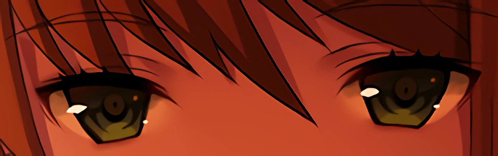
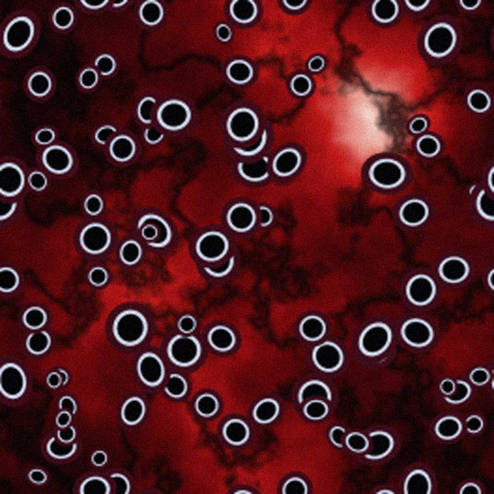
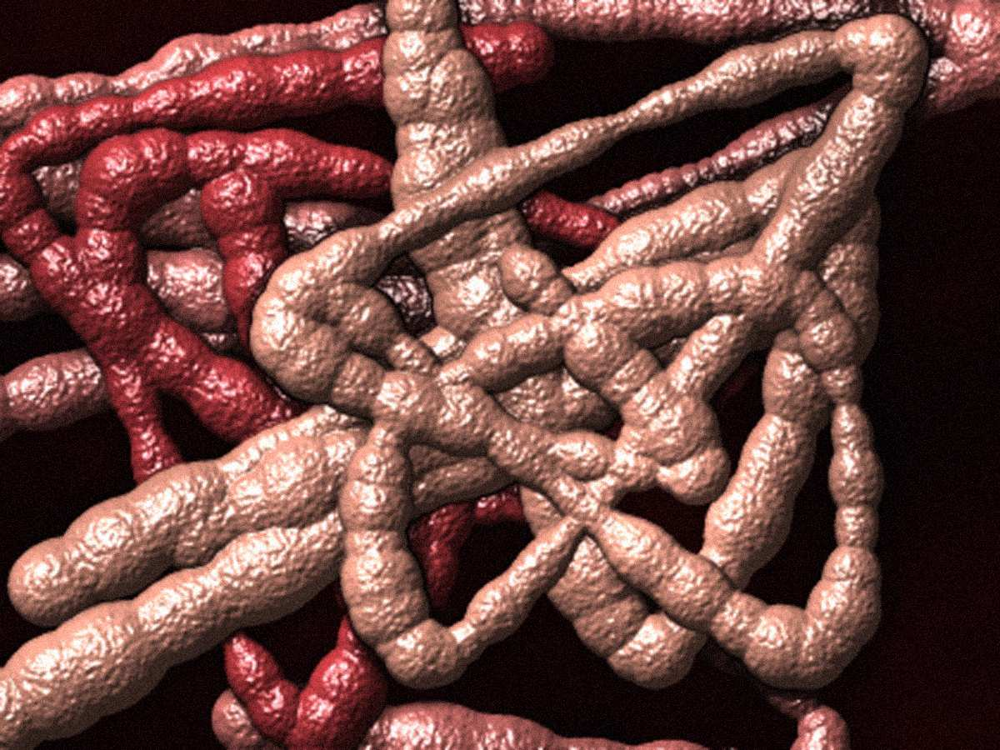
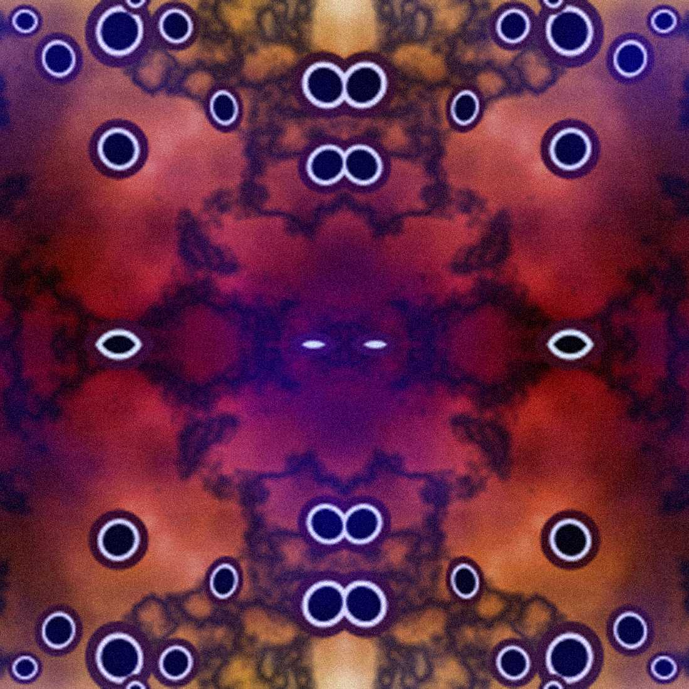
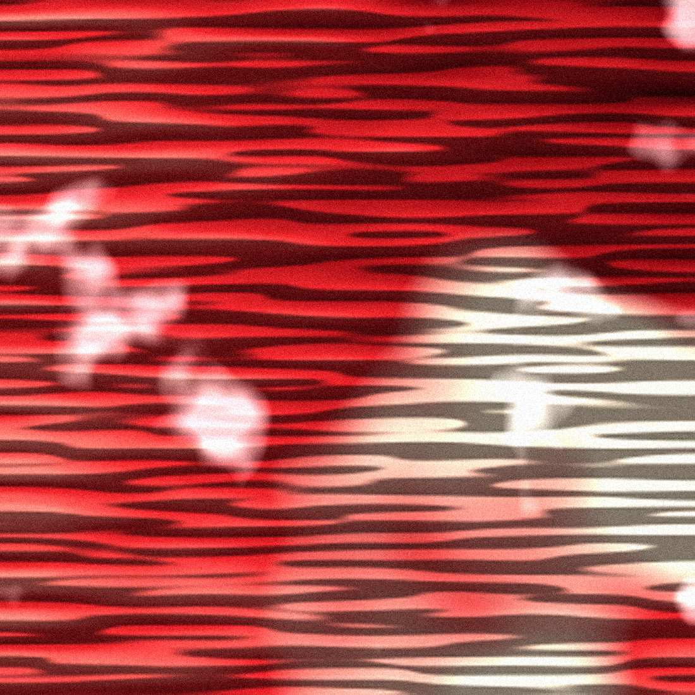
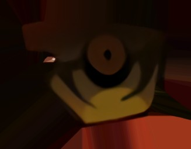
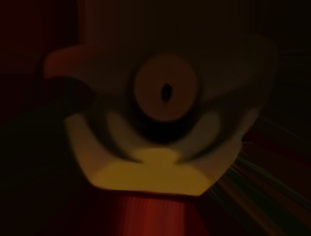

Протокол 1. Галлюцинации Юри
Чаепитие на крыше с кексами Нацуки. Юри признаётся, что добавила в чай «мясо порога». Локация начинает лагать, возникают пятна крови.
Они все делают вид, что ничего не происходит. Это моя любимая часть.
Закрытый архив проекта Doki Doki Digital Genesis. Для работы с протоколами начните сессию. Рекомендуется включить звук.







Научный архив наблюдений за коррекционным классом. Здесь собраны протоколы всех серий, досье на субъектов и рабочие материалы авторов.
Я немного отредактировала этот сайт. Надеюсь, вы не против.



monika.chr.На странице спрятано 11 секретов.
Проект представляет собой абсурдный комедийный сериал в стилистике Doki Doki Literature Club, снятый на движке Minecraft. Действие происходит в школе для особенных учеников, где работает литературный клуб.
Основные методы исследования: наблюдение за чаепитиями на крыше, анализ стихов участниц и изучение поведения субъекта Долгопупс в туалете.
Если у вас получится заметить, что с ними не так, дайте знать. Я просто интересуюсь.

Чаепитие на крыше с кексами Нацуки. Юри признаётся, что добавила в чай «мясо порога». Локация начинает лагать, возникают пятна крови.
Они все делают вид, что ничего не происходит. Это моя любимая часть.
Последний учебный день, стихи, инцидент в туалете и личная комната Нацуки. Юри замечает у Моники нож.
Нож был. Никто не поверил. Так и должно быть.
Поездка в лагерь «Шагша», концерт Дерзкого, взрыв и встреча с Джейсоном Вурхизом. Полицейский отказывается верить показаниям.
Бар, рассказы о японской деревне и Токио-3, крики «В РОБОТА!». Золотое правило: лайк — кекс от Нацуки, нет лайка — Моника удалит Windows.
Юри и Сайори идут по бесконечному коридору и попадают в красный зал.
Дальше засекречено. Но ты можешь нажать:
██████ ████ ██████████
Нажмите на карточку, чтобы проверить состояние субъекта.